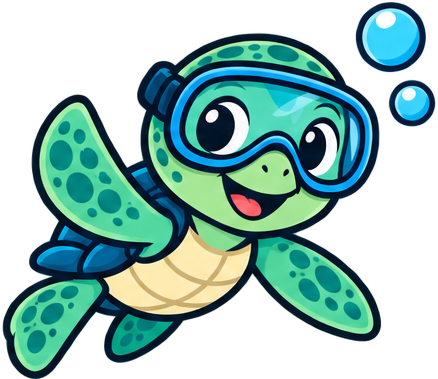

The DiveFolk Commons
Guides and resources for divers
Free guides and the best of what's out there, gathered in one place. Pick a section to start.

Thinking about diving?
How to try scuba in a pool before you commit, what a course involves, the health questions, and how to pick a dive shop.
Just certifiedNew to diving
First trips, which gear to buy first, logging your dives, flying after diving and keeping your skills fresh.
GuidesTechnology Explained
What your dive computer is telling you, why it splits dives and how to stop it, gradient factors, air integration, dive data files and backing up your log.
20 promptsDiveFolk AI
We're all using AI. Here's how to use it better as a diver, with fill-in-the-blank prompts for trips, gear, skills, health questions, your logbook and marine life.
DirectoryOther Resources
Forums and groups, buddy finders, dive safety, citizen science and conservation, magazines and news, and handy tools.
Updated weeklyDiveFolk News
Diving news worth your time: gear and technology, safety, travel and the ocean. Summarized in plain words with a link to the full story, updated weekly.
First report is upDiveFolk Trips
First-hand trip reports from divers, and a where-to-go-when guide, each one checked and dated.